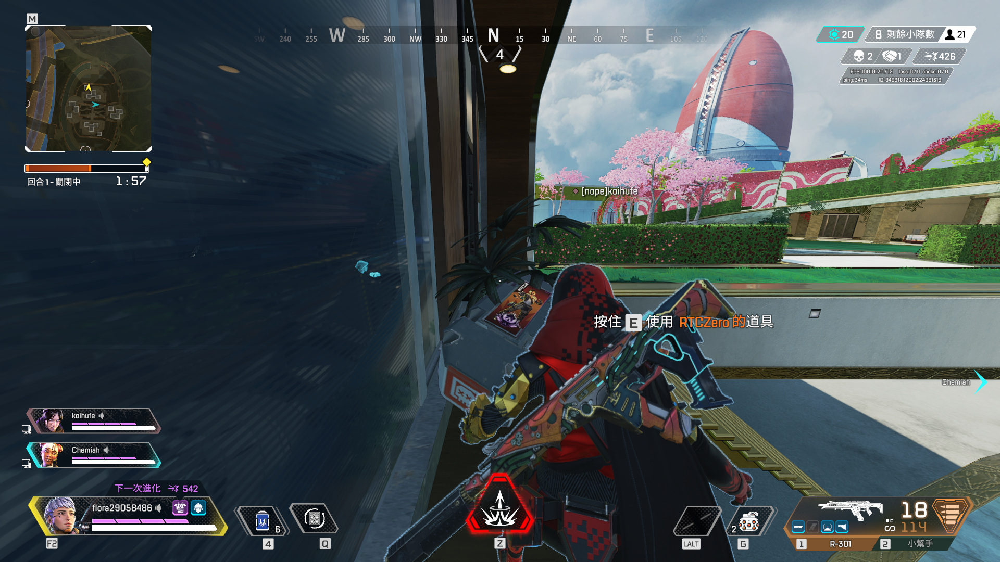
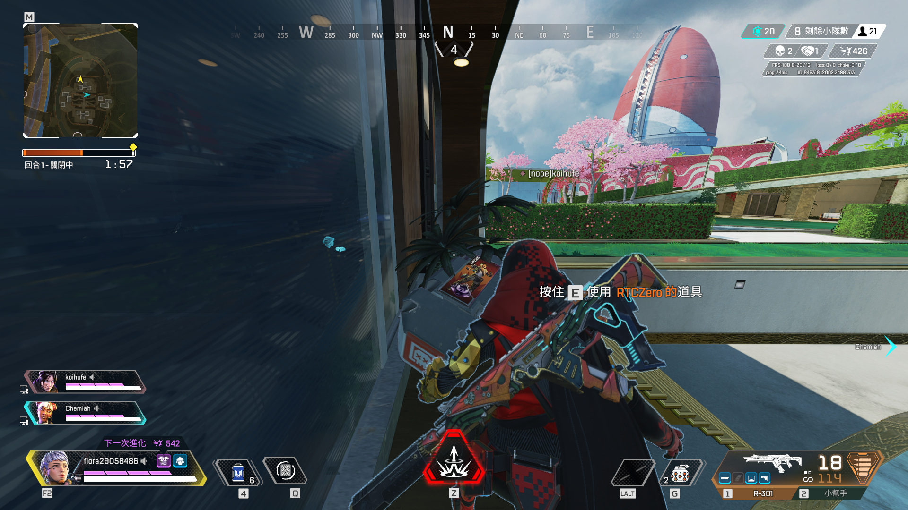

什麼是Universe Mind Note
創作動機: 一種筆記程式，可以讓每個使用者可以記錄下日常生活裡隨時想記錄下來的事物並分享，一般的筆記程式大多 只有支援特定格式，透過UMN可以將PDF、圖片、日曆、EXCEL...等日常生活常見的檔案整合到一個程式中，並且以心智 圖的方式安排版面。
創作動機: 一種筆記程式，可以讓每個使用者可以記錄下日常生活裡隨時想記錄下來的事物並分享，一般的筆記程式大多 只有支援特定格式，透過UMN可以將PDF、圖片、日曆、EXCEL...等日常生活常見的檔案整合到一個程式中，並且以心智 圖的方式安排版面。
透過UMN的社群功能可以看到其他人分享的筆記內容以及用法，還可以下載網友發布的精美版面美化Note的link、node。 也可以透過attribute整合功能讓別人的筆記與自己的快速整合。
清楚的階層安排與心智圖式的介面讓整理資料時邏輯更清晰
簡單的使用介面下卻可以調整幾乎所有看的到的元素，讓喜歡強烈風格的你愛不釋手(也可以套用社群上的模板)